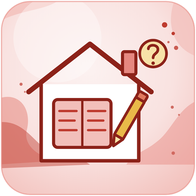

Mattekompassen
Örtagårdsskolan 7–9
Startsida
Åk 7
Åk 8
Åk 9
Alla sidor
Åk 7
Årskurs 7
Lektioner
Tillbakablick
Trygg start
Hjärngympa hemma
Repetition
Problemlösning
Interaktiva övningar
Utmana dig
Diagnos
Test
Övningsprov
Nå toppen
Åk 8
Årskurs 8
Lektioner
Tillbakablick
Trygg start
Hjärngympa hemma
Repetition
Problemlösning
Interaktiva övningar
Utmana dig
Diagnos
Test
Övningsprov
Nå toppen
Åk 9
Årskurs 9
Lektioner
Tillbakablick
Trygg start
Hjärngympa hemma
Repetition
Problemlösning
Interaktiva övningar
Utmana dig
Diagnos
Test
Övningsprov
Nå toppen
För alla
Startsida
Högstadiets grunder
Redo för högstadiet?
Nyfiken på gymnasiets matematik?
Nationella prov åk 6
NP-träning åk 6
Nationella prov åk 9
NP-träning åk 9
PISA-träning
Matematikverkstad
Matematiska begrepp
Testa dina begrepp
Mattequiz
Problemlösning med blockmodellen
Blockmodellen – blandade uppgifter
Blockmodellen – mellanstadiet
Blockmodellen – högstadiet
Bedömning
Så får du hjälp
Ämnesord på olika språk
f(x) = x²
x² = 25

Startsida
/
Åk 9
/ Hjärngympa hemma
Hjärngympa hemma
Åk 9 · Fördjupa
Kapitel 1
Tal
Läxa 1
Facit
Läxa 2
Facit
Läxa 3
Facit
Läxa 4
Facit
Kapitel 2
Samband och förändring
Läxa 5
Facit
Läxa 6
Facit
Läxa 7
Facit
Läxa 8
Facit
Kapitel 3
Algebra
Läxa 9
Facit
Läxa 10
Facit
Läxa 11
Facit
Läxa 12
Facit
Kapitel 4
Geometri
Läxa 13
Facit
Läxa 14
Facit
Läxa 15
Facit
Läxa 16
Facit
Kapitel 1–4
Blandade uppgifter
Läxa 17
Facit
Läxa 18
Facit
Läxa 19
Facit
Läxa 20
Facit
← Tillbaka till åk 9
 MattekompassenÖrtagårdsskolan 7–9
MattekompassenÖrtagårdsskolan 7–9